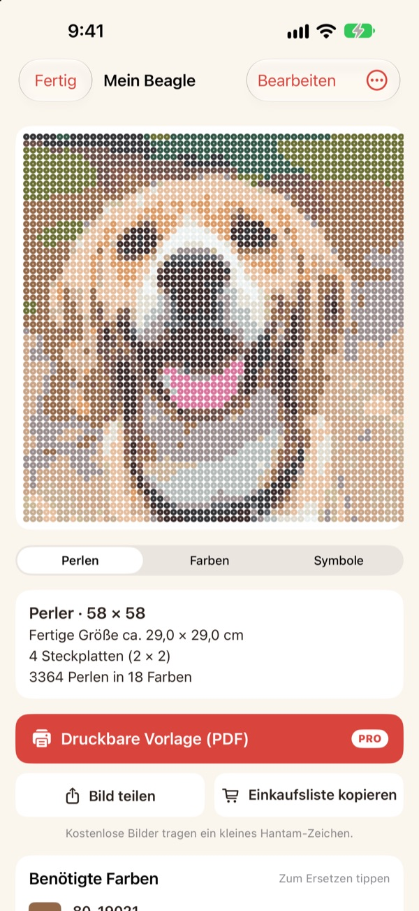
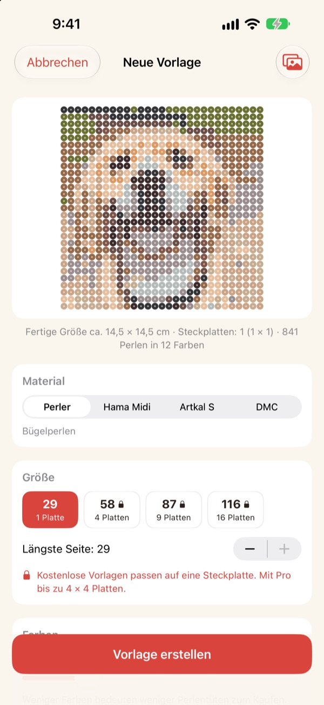
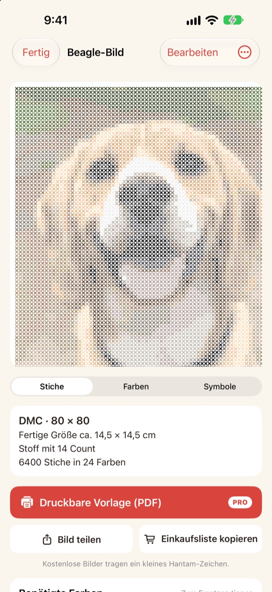
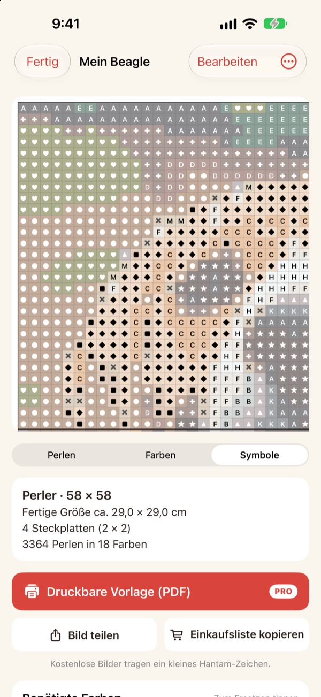
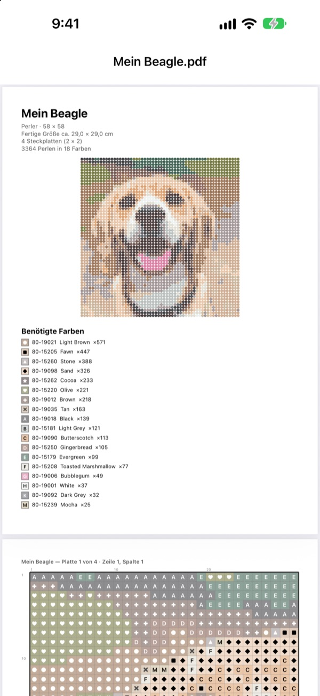

Aus einem Foto
wird eine Vorlage
Wähl ein Foto von deinem Haustier, dir selbst oder deiner Lieblingsfigur. Hantam macht daraus eine Vorlage für Bügelperlen oder Kreuzstich, abgestimmt auf Farben, die du kaufen kannst.
Vorlagen bis zu einer Steckplatte sind kostenlos. Deine Fotos bleiben auf dem iPhone.

Probier es mit einem Foto
Dieselbe Farbzuordnung wie in der App, mit der echten Perler-Farbtabelle. Ändere Größe und Farbanzahl oder nimm ein eigenes Foto.
Eine Vorlage ist schnell gemacht. Echte Perlenfarben zu treffen nicht.
Verpixelst du ein Foto in irgendeiner Bildbearbeitung, entstehen Farben, die es bei keiner Perle und keinem Garn gibt. Dann musst du raten, aus welcher Dose jedes Feld kommt, und zählen, wie viele du von jeder Farbe kaufen musst. Hantam wählt nur aus Farben, die es wirklich zu kaufen gibt, und sagt dir genau, wie viele du brauchst.
Echte Farben, echte Nummern
Wähle Perler-, Hama-Midi- oder Artkal-S-Perlen oder DMC-Garn. Jedes Feld bekommt eine Farbe, die die Marke wirklich verkauft, samt Farbnummer.
Größe und Farbanzahl legst du selbst fest. Große Vorlagen werden in Steckplatten von 29 × 29 aufgeteilt.

Auch für Kreuzstich
Wähl DMC-Garn, und aus demselben Foto wird eine Kreuzstichvorlage. Such dir Aida-Stoff mit 11, 14, 16 oder 18 Kästchen pro Zoll aus, und Hantam zeigt die fertige Größe und wie viele Stiche jede Farbe braucht.

Du weißt genau, was du kaufen musst
Wechsle zur Symbolvorlage und arbeite Feld für Feld, mit dicken Linien an jeder Plattengrenze oder alle 10 Stiche. Sieh, wie viele Perlen jede Farbe braucht, und nutze Einkaufsliste kopieren mit einem Tipp.
Tippe ein Feld an, um es zu ändern, oder ersetze eine Farbe überall durch eine andere.

Ausdrucken und loslegen
Mit Pro exportierst du eine Druckbare Vorlage (PDF): zuerst die Farbliste, dann Symbolvorlagen Seite für Seite, eine Steckplatte nach der anderen.

In drei Schritten zur Vorlage
- 1
Foto auswählen
Haustiere, Gesichter, Logos und Figuren klappen alle. Fotos mit einem klaren Motiv werden am schönsten.
- 2
Perlen oder Garn wählen
Leg Marke, Größe und Farbanzahl fest.
- 3
Loslegen
Folge der Vorlage am Bildschirm oder druck sie mit Pro aus.
Materialien und Größen
- Perler · Hama Midi · Artkal S
- Bügelperlen, Steckplatten 29 × 29, jede Perle etwa 5 mm
- DMC
- Kreuzstichgarn auf Aida mit 11, 14, 16 oder 18 Kästchen pro Zoll
- Kostenlos
- Perlen bis 1 Steckplatte (29 Felder), Garn bis 40 Stiche an der längsten Seite
- Pro
- Perlen bis 4 × 4 Steckplatten (116 Felder), Garn bis 200 Stiche
- Farben
- 2 bis 50 pro Vorlage
Perler, Hama, Artkal und DMC sind Marken ihrer jeweiligen Inhaber. Hantam steht in keiner Verbindung zu ihnen. Farben auf dem Bildschirm können leicht vom Original abweichen.
Kostenlos starten. Pro für große Vorlagen und zum Drucken.
Kostenlos
- Vorlagen bis zu einer Steckplatte oder 40 Stichen
- Alle Marken: Perler, Hama, Artkal und DMC
- Anzahl pro Farbe, Einkaufsliste und Farbtausch
- Bis zu 3 gespeicherte Vorlagen
- Bilder teilen mit kleinem Hantam-Zeichen
Hantam Pro
- Druckbare PDF-Vorlagen
- Bis zu 4 × 4 Steckplatten oder 200 Stiche
- Unbegrenzt viele gespeicherte Vorlagen
- Bilder ohne Zeichen
- Alle Pixel-Art-Werkzeuge
Monats- oder Jahresabo oder ein einmaliger Kauf auf Lebenszeit
Du kannst Pro auch direkt in der App an Freunde verschenken.
Häufige Fragen
Werden meine Fotos hochgeladen?
Nein. Fotos und Vorlagen werden nur auf deinem iPhone verarbeitet und gespeichert.
Die Farben sehen etwas anders aus als meine Perlen.
Bildschirme zeigen Farben anders als Kunststoff und Garn. Tippe in der Liste auf eine Farbe, um sie durch eine passendere derselben Marke zu ersetzen.
Wie groß kann eine Vorlage werden?
Kostenlos passt sie auf eine Steckplatte von 29 × 29 oder 40 Stiche an der längsten Seite. Mit Pro bis zu 4 × 4 Steckplatten (116 Perlen) oder 200 Stiche.
Welche Fotos eignen sich am besten?
Fotos mit einem klaren Motiv und schlichtem Hintergrund. Je weniger Farben, desto sauberer die Vorlage. Wirkt das Ergebnis unruhig, reduzier die Farbanzahl.
Kann ich weiterhin Pixel-Art machen?
Ja. Fotos verpixeln, nach 110 Beispielen zeichnen und Bild für Bild animieren ist alles noch da. Alle Pixel-Art-Werkzeuge sind in Pro enthalten.
Wie stelle ich meinen Kauf wieder her?
Öffne in der App die Einstellungen und tippe auf Käufe wiederherstellen. Verwende denselben Apple Account, mit dem du Pro gekauft hast.
Wie kündige ich das Abo?
In den iPhone-Einstellungen › dein Name › Abonnements Hantam auswählen. Der Kauf auf Lebenszeit ist eine einmalige Zahlung und verlängert sich nie.
Wie melde ich einen Fehler oder schlage etwas vor?
Am schnellsten über das Feedback in den Einstellungen der App. Du kannst uns auch an die Adresse unten schreiben oder eine Instagram-DM an @lee25_ios schicken.
Fragen, Fehlermeldungen und Ideen gern an leeo@kakao.com.